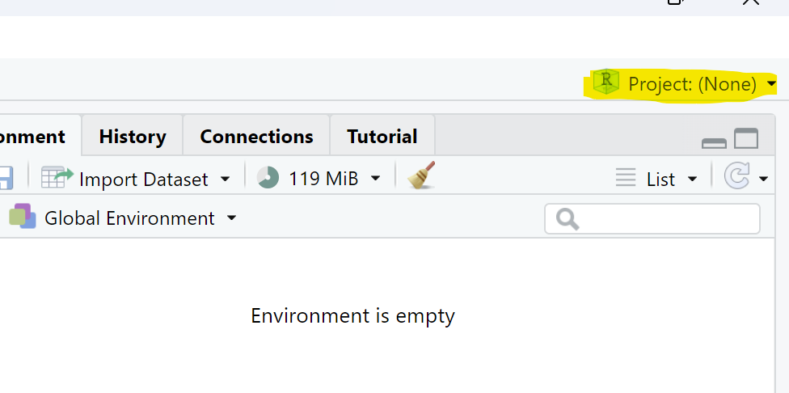
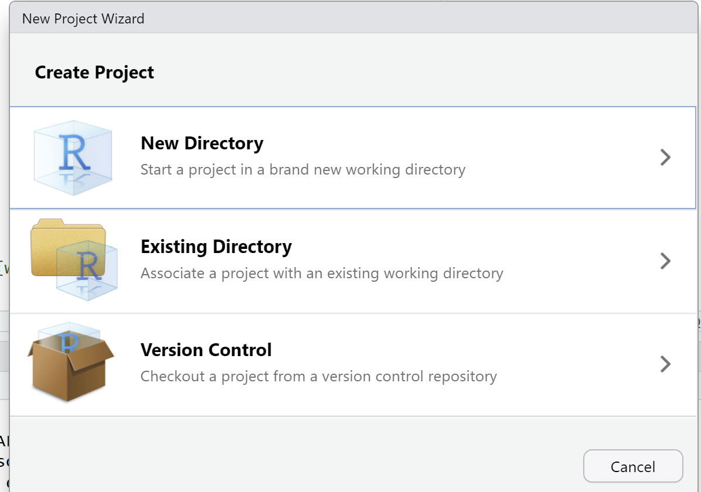
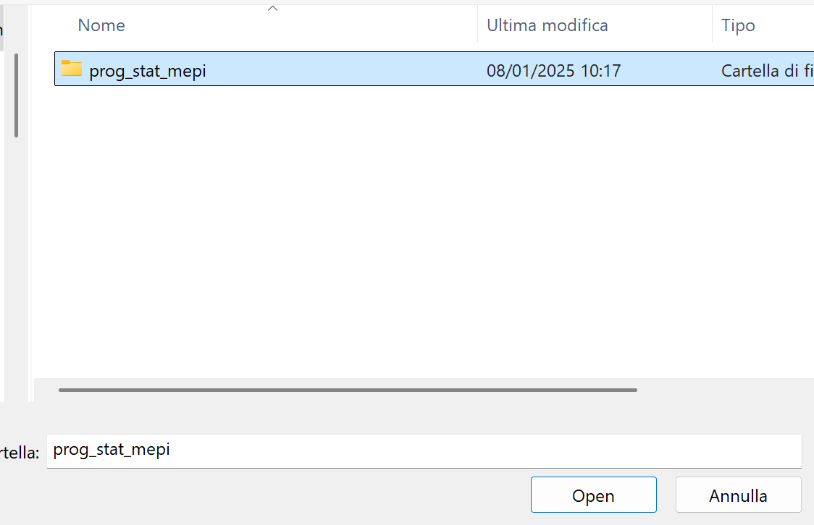
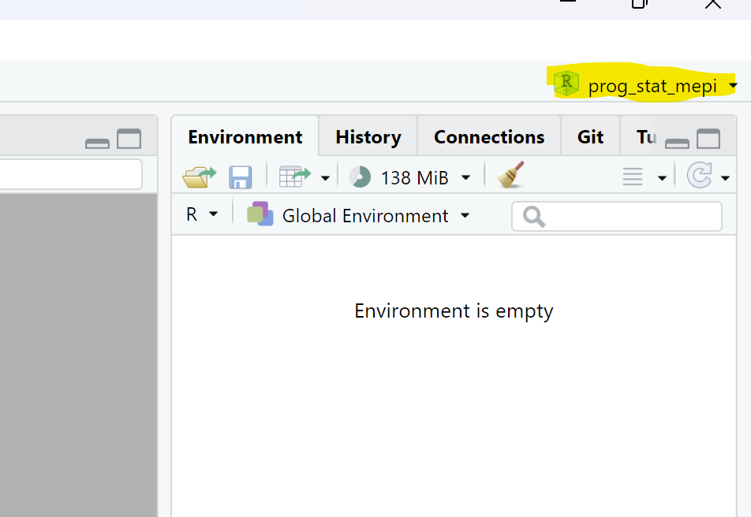
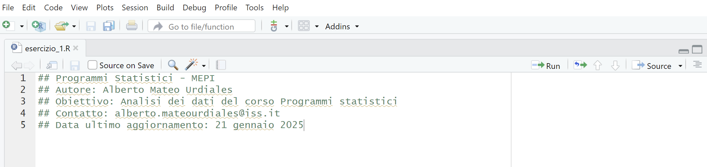
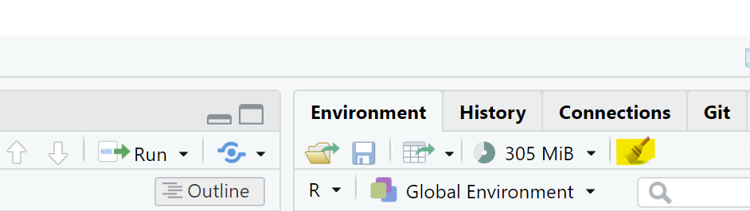

# Questo è un commento
# Leggere i dati
casi <- import("linelist_raw.xlsx") %>% # i commenti si possono anche inserire dopo codice
# filter(age > 50) # si possono anche usare per disattivare pezzi di codice
count()
Master II livello Epidemiologia - Programmi Statistici
Sessione 1: Introduzione a R e RStudio - Importazione ed esplorazione di database
Obiettivi di questa sesione
- acquisire familiarità con l’interfaccia di RStudio,
- capire l’importanza dei progetti in RStudio,
- essere in grado di istallare e caricare pacchetti
- essere in grado di eseguire calcoli
- essere in grado di utilizzare funzioni
- essere in grado di leggere ed esplorare un database
Interfaccia di RStudio
Come abbiamo detto durante la lezione, RStudio è un’interfaccia per rendere più semplice l’uso di R. RStudio ha quattro riquadri (se vedi soltanto 3 è sicuramente perché non hai aperto uno script).
Riquadro source: In alto a sinistra, è uno spazio per modificare, eseguire e salvare gli script. Gli script contengono i comandi che vuoi eseguire. Per gli utenti di Stata, questo riquadro è simile alle finestre Do-file e Data Editor.
Riquadro console: Il riquadro inferiore sinistro è dove troviamo il “motore” di RStudio: R. È qui che i comandi vengono effettivamente eseguiti e vengono visualizzati output non grafici e messaggi di errore/warning. Puoi scrivere ed eseguire direttamente i comandi nella console, ma tieni presente che questi comandi non vengono salvati come quando si eseguono i comandi da uno script.
Riquadro environment: In alto a destra, è utilizzato per visualizzare gli oggetti (come per esempio database) importati o creati nella sessione corrente.
Riquadro plots, viewer, packages, and help: Il riquadro in basso a destra. La scheda “plots” mostrerà i grafici, mentre altri output interattivi -come tabelle HTML- verrano visualizzati nella scheda “viewer”. La scheda pacchetti mostra i pacchetti istallati e caricati, permettendo anche l’istallazioni di nuovi pacchetti. Finalmente, la scheda “help” si utilizza per ottenere informazioni su funzioni o pacchetti in R.
Se vuoi sapere di più, leggi la sezione dell’EpiRhandbook su R Studio
Step 1: Creare un progetto
Lavorare dentro un progetto di RStudio è importante perché:
- rende più semplice l’importazione di database, così come l’esportazione o il salvataggio di outputs
- permette di organizzare il lavoro in modo efficiente
- permettere di condivere in modo efficiente il lavoro con altre persone: basta comprimere un progetto e inviarlo via email. Quelli che lo ricevono possono aprirlo e replicare esattamente il tuo lavoro!
- può essere collegato a un software di version control come Git/Github
Compito:
- Assicurati che la cartella prog_stat_mepi sia scaricata è decompressa nel tuo laptop
- Apri RStudio
- Crea un progetto di RStudio dentro la cartella prog_stat_mepi
Clicca per leggere un suggerimento
Se non riesci, segui i passi indicati in questa sezione dell’EpiRhandbook su R Projects
Clicca per vedere la soluzione (provaci da solo prima!)
Per creare un progetto, puoi cliccare su File -> New Project. Puoi anche farlo cliccando sul simbolo di R nell’angolo superiore a destra (vedi immagine sotto) e poi scegliendo New Project.

Vedrai tre opzioni:
- New Directory
- Existing Directory
- Version control

New Directory serve per creare una nuova cartella dove sarà creato il progetto. Noi non vogliamo questa opzione perché abbiamo già una cartella pronta.
Existing Directory serve per inserire il progetto in una cartella esistente dentro il tuo laptop. Scegli questa opzione e seleziona browse. Poi cerca la cartella **prog_stat_mepi* e clicca su Open come indicato nell’immagine sotto

Dovresti vedere che RStudio si chiude e si riapre. Se tutto è andato a buon fine, nell’angolo superiore a destra dovresti vedere adesso il nome del progetto (come nell’immagine sotto).

Step 2: Creare uno script
Come abbiamo detto durante la lezione, il nostro codice di R lo scriviremo in uno script. Questo script -simile a un do-file per gli utenti di STATA- è un documento che possiamo salvare e riprendere quando vogliamo.
Ci sono due elementi dentro dello script: codice e commenti. Commenti è qualsiasi cosa che scriviamo a destra di un simbolo cancelletto (#). I commenti aiuto a te stesso e ad altri a capire cosa fai e perché lo fai. Vedi lo esempio sotto:
Compito:
- Crea un nuovo script è salvalo nella sottocartella scripts col nome: esercizio_1
- Nello script, comincia scrivendo dei commenti dove indichi: Nome e cognome; obiettivo dello script; tuo email e la data.
Clicca per leggere un suggerimento
Per aprire uno script, seleziona File -> New File -> R Script.
Clicca per vedere la soluzione (provaci da solo prima!)
Il tuo script dovrebbe assomigliare a questo:

Step 3: Funzioni semplici
Ricorda che c’è una differenza fondamentale tra chiedere a R di fare qualcosa e di stamparlo nella console e chiedere a R di fare qualcosa e salvarlo nell’Environment. Se noi scriviamo una funzione e non usiamo l’operatore di assegnazione -> R lo farà e lo stamperà nella console. Se invece lo usiamo, lo salverà nell’Environment e nella console vedremo soltanto il pezzo di codice che abbiamo lanciato, ma non l’output.
Compiti:
- Crea un vettore con i numeri: 24, 98, 233, 9823, 3, -76 e salvalo nell’Environment col nome numeri. Scrivi funzioni per calcolare: media, numero più alto, numero più baso e somma.
- Salva la media in un oggetto chiamato media_numeri
- Crea un vettore con le parole: Roma, Torino, Napoli, Milano, Bari
- Crea una funzione che transformi questi nomi in lettere maiuscole e salva il vettore nell’Environment col nome citta_italiane
Clicca per leggere un suggerimento
Per creare un vettore devi inserire i numeri (o le città) dentro della funzione “concatenate” o c() separati da virgole. Ricorda che le parole in R devo essere inserite tra virgolette, mentre i numeri no.
Se vuoi salvare il vettore nell’Environment, scrive il nome del vettore, poi l’operatore di assegnazione -> e poi il vettore.
Per calcolare la media puoi usare la funzione mean(), mentre per rilevare il numero più alto max() e il numero più basso min(). Invece, per trasformare un vettore testuale in lettere maiuscole puoi usare la funzione toupper().
Clicca per vedere la soluzione (provaci da solo prima!)
numeri <- c(24, 98, 233, 9823, 3, -76)
max(numeri)[1] 9823min(numeri)[1] -76media_numeri <- mean(numeri)
citta_italiane <- c("Roma", "Torino", "Napoli", "Milano", "Bari")
citta_italiane <- toupper(citta_italiane)Step 4: Leggere ed esplorare dati di un focolaio di Ebola
Adesso comincieremo ad analizzare dati più complessi che somigliano ai dati che un epidemiologo trova nella vita reale.
Il database che useremo lo potete trovare nella sottocartella “prog_stat_mepi/data” e si chiama linelist_raw.xlsx. Questo database contiene dati fittizi che imitano dati individuali raccolti durante un’epidemia di ebola. Il database è stato creato da AppliedEpi e si può scaricare nel sito di EpiRhandbook
Puoi aprire il database in excel e dare uno sguardo se vuoi. Il file data_dictionary_linelist.xlsx dentro la sottocartella “prog_stat_mepi/data/data dictionaries” descrive il significato di ogni variabile.
Nei prossimi passi eseguiremo le azioni necessarie per leggere ed esploreare questo database.
4.1. Creare un nuovo script
Utilizzeremo un nuovo script per questa analisi, quindi salva e chiudi lo script esercizio_1.R e crea un nuovo script chiamato analisi_ebola. Salvalo sempre nella sottocartella “scripts”. Assicurati che rimani sempre dentro del progetto prog_stat_mepi. Assicurati anche che l’environment è pulito. Per pulirlo puoi cliccare sul simbolo che somiglia una scopa in alto a destra (vedi immagine sotto).

4.2. Istallare e caricare i pacchetti necessari
Come abbiamo detto durante la lezione, la prima parte del nostro script (oltre a includere -commentato- alcune informazioni sull’obiettivo, autore, data dell’ultimo aggiornamento e dettagli di contatto) è installare e caricare pacchetti.
Fortunatamente c’è un pacchetto che svolge questo compito in modo molto efficace: {pacman}. La funzione p_load() di questo pacchetto installerà tutti i pacchetti elencati non ancora installati e li caricherà. Se un pacchetto elencato era già stato installato, lo caricherà e basta. Puoi trovare maggiori informazioni sull’installazione/caricamento di pacchetti nella sezione Packages dell’EpiRhandbook.
Compito:
- Utilizzando l’approccio di
pacman::p_load(), prova a installare e caricare i seguenti pacchetti: rio, janitor, lubridate, skimr, epikit, gtsummary e tidyverse.
Clicca per leggere un suggerimento
Quando farai analisi più complesse, potresti finire per usare un lungo elenco di pacchetti. Sfortunatamente, pacchetti diversi hanno funzioni con lo stesso nome. Ad esempio, il pacchetto {dplyr} (già installato con {tidyverse}) ha una funzione chiamata select() che usiamo frequentemente per mantere un elenco di colonne di un database. Ma anche altri pacchetti come {MASS} hanno una funzione chiamata select(). Questo potrebbe creare problemi se vuoi mantere colonne usando select() di dplyr ma R pensa che tu stia chiamando select() di MASS (lo chiamiamo mascheramento: select() di dplyr è mascherato da select() di MASS). Dato che è più probabile che tu usi funzioni da {tidyverse}, assicurati che questo sia l’ultimo pacchetto nel tuo elenco p_load() in modo che le funzioni da {tidyverse} (incluse le funzioni {dplyr}) “prevalgano” sempre.
Clicca per vedere la soluzione (provaci da solo prima!)
# installa (se necessario) da CRAN e carica i pacchetti da utilizzare
pacman::p_load(
rio, # importazione dati
skimr, # ottieni panoramica dei dati
janitor, # pulizia dati e tabelle
lubridate, # lavorare con le date
epikit, # per creare categorie di età
gtsummary, # statistiche riassuntive, test e regressioni
tidyverse # gestione e visualizzazione dati
)4.3. Leggere i dati
Esistono diversi modi in cui puoi importare i diversi data frame. Il file che noi vogliamo leggere (linelist_raw.xlsx) è un file excel. Un modo di leggerlo potrebbe essere quello di usare una funzione R specifica per importare file excel. Ad esempio, read_excel() da {readxl}. Questo, però, significherebbe che dobbiamo usare una funzione diversa per ogni tipo di file. Coiè, se vogliamo leggere un file .csv dovremmo usare la funzione read.csv() da {base} o la funzione fromJSON() da {jsonlite} per importare un file .json. Fortunatamente, esiste un approccio più efficiente che consiste nell’usare la funzione import() da {rio} per aprire qualsiasi file. Questa funzione riconoscerà il tipo di file e sceglierà la funzione appropriata per importarlo. Se vuoi saperne di più sulle funzioni di importazione, leggi il capitolo Import and Export di EpiRhandbook.
Compito:
- Importa il database linelist_raw.xlsx utilizzando
import()da {rio} e salvalo nell’Environment col nome casi_ebola.
Clicca per vedere la soluzione (provaci da solo prima!)
# leggere i dati di Ebola
casi_ebola <- import("data/linelist_raw.xlsx")4.4. Esplorare il database
Compiti:
Usando le funzioni che abbiamo visto durante la lezione per esplorare database, prova a scoprire:
Il numero di colonne e righe
La classe delle colonne e se questa corrisponde alla sua natura (ad esempio, le “date” sono considerate “date” da R?)
Guarda le diverse categorie delle colonne su gender, hospital, outcome o fever. Pensi di aver bisogno di ricodificarne qualcuna?
Esplora la colonna “age”. Pensi si deva cambiare qualcosa?
Prova a rispondere alle domande sotto!
Clicca per leggere un suggerimento
Un modo efficiente per esplorare i dati è usare la funzione skim() dal pacchetto {skimr}, poiché fornisce tutte le informazioni necessarie con un solo comando. Naturalmente, ci sono diverse alternative. Per conoscere le diverse categorie in una colonna, puoi usare la funzione tabyl() da {janitor}, che ti fornirà conteggi e percentuali di ogni categoria nella colonna di dati.
Clicca per vedere la soluzione (provaci da solo prima!)
# esplorare tutto il database con skimr
skim(casi_ebola)| Name | casi_ebola |
| Number of rows | 6611 |
| Number of columns | 28 |
| _______________________ | |
| Column type frequency: | |
| character | 17 |
| numeric | 8 |
| POSIXct | 3 |
| ________________________ | |
| Group variables | None |
Variable type: character
| skim_variable | n_missing | complete_rate | min | max | empty | n_unique | whitespace |
|---|---|---|---|---|---|---|---|
| case_id | 137 | 0.98 | 6 | 6 | 0 | 5888 | 0 |
| date onset | 293 | 0.96 | 10 | 10 | 0 | 580 | 0 |
| outcome | 1500 | 0.77 | 5 | 7 | 0 | 2 | 0 |
| gender | 324 | 0.95 | 1 | 1 | 0 | 2 | 0 |
| hospital | 1512 | 0.77 | 5 | 36 | 0 | 13 | 0 |
| infector | 2323 | 0.65 | 6 | 6 | 0 | 2697 | 0 |
| source | 2323 | 0.65 | 5 | 7 | 0 | 2 | 0 |
| age | 107 | 0.98 | 1 | 2 | 0 | 75 | 0 |
| age_unit | 7 | 1.00 | 5 | 6 | 0 | 2 | 0 |
| fever | 258 | 0.96 | 2 | 3 | 0 | 2 | 0 |
| chills | 258 | 0.96 | 2 | 3 | 0 | 2 | 0 |
| cough | 258 | 0.96 | 2 | 3 | 0 | 2 | 0 |
| aches | 258 | 0.96 | 2 | 3 | 0 | 2 | 0 |
| vomit | 258 | 0.96 | 2 | 3 | 0 | 2 | 0 |
| time_admission | 844 | 0.87 | 5 | 5 | 0 | 1091 | 0 |
| merged_header | 0 | 1.00 | 1 | 1 | 0 | 1 | 0 |
| …28 | 0 | 1.00 | 1 | 1 | 0 | 1 | 0 |
Variable type: numeric
| skim_variable | n_missing | complete_rate | mean | sd | p0 | p25 | p50 | p75 | p100 | hist |
|---|---|---|---|---|---|---|---|---|---|---|
| generation | 7 | 1.00 | 16.60 | 5.71 | 0.00 | 13.00 | 16.00 | 20.00 | 37.00 | ▁▆▇▂▁ |
| lon | 7 | 1.00 | -13.23 | 0.02 | -13.27 | -13.25 | -13.23 | -13.22 | -13.21 | ▅▃▃▅▇ |
| lat | 7 | 1.00 | 8.47 | 0.01 | 8.45 | 8.46 | 8.47 | 8.48 | 8.49 | ▅▇▇▇▆ |
| row_num | 0 | 1.00 | 3240.91 | 1857.83 | 1.00 | 1647.50 | 3241.00 | 4836.50 | 6481.00 | ▇▇▇▇▇ |
| wt_kg | 7 | 1.00 | 52.69 | 18.59 | -11.00 | 41.00 | 54.00 | 66.00 | 111.00 | ▁▃▇▅▁ |
| ht_cm | 7 | 1.00 | 125.25 | 49.57 | 4.00 | 91.00 | 130.00 | 159.00 | 295.00 | ▂▅▇▂▁ |
| ct_blood | 7 | 1.00 | 21.26 | 1.67 | 16.00 | 20.00 | 22.00 | 22.00 | 26.00 | ▁▃▇▃▁ |
| temp | 158 | 0.98 | 38.60 | 0.95 | 35.20 | 38.30 | 38.80 | 39.20 | 40.80 | ▁▂▂▇▁ |
Variable type: POSIXct
| skim_variable | n_missing | complete_rate | min | max | median | n_unique |
|---|---|---|---|---|---|---|
| infection date | 2322 | 0.65 | 2012-04-09 | 2015-04-27 | 2014-10-04 | 538 |
| hosp date | 7 | 1.00 | 2012-04-20 | 2015-04-30 | 2014-10-15 | 570 |
| date_of_outcome | 1068 | 0.84 | 2012-05-14 | 2015-06-04 | 2014-10-26 | 575 |
# esplorare categorie di una variabile "character" o "factor"
tabyl(casi_ebola, gender)| gender | n | percent | valid_percent |
|---|---|---|---|
| f | 3140 | 0.4749660 | 0.4994433 |
| m | 3147 | 0.4760248 | 0.5005567 |
| NA | 324 | 0.0490092 | NA |
tabyl(casi_ebola, hospital)| hospital | n | percent | valid_percent |
|---|---|---|---|
| Central Hopital | 11 | 0.0016639 | 0.0021573 |
| Central Hospital | 457 | 0.0691272 | 0.0896254 |
| Hospital A | 290 | 0.0438663 | 0.0568739 |
| Hospital B | 290 | 0.0438663 | 0.0568739 |
| Military Hopital | 32 | 0.0048404 | 0.0062757 |
| Military Hospital | 800 | 0.1210104 | 0.1568935 |
| Mitylira Hopital | 1 | 0.0001513 | 0.0001961 |
| Mitylira Hospital | 79 | 0.0119498 | 0.0154932 |
| Other | 907 | 0.1371956 | 0.1778780 |
| Port Hopital | 48 | 0.0072606 | 0.0094136 |
| Port Hospital | 1756 | 0.2656179 | 0.3443813 |
| St. Mark’s Maternity Hospital (SMMH) | 417 | 0.0630767 | 0.0817807 |
| St. Marks Maternity Hopital (SMMH) | 11 | 0.0016639 | 0.0021573 |
| NA | 1512 | 0.2287097 | NA |
tabyl(casi_ebola, fever)| fever | n | percent | valid_percent |
|---|---|---|---|
| no | 1126 | 0.1703222 | 0.1772391 |
| yes | 5227 | 0.7906519 | 0.8227609 |
| NA | 258 | 0.0390259 | NA |